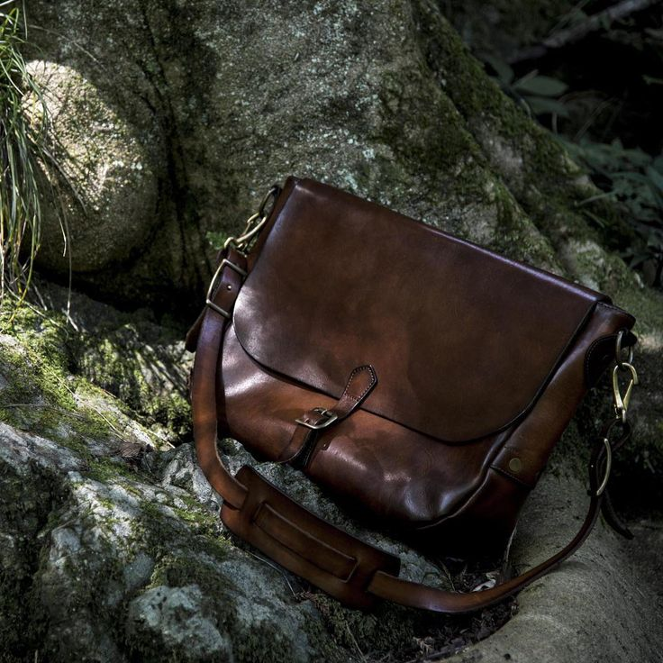
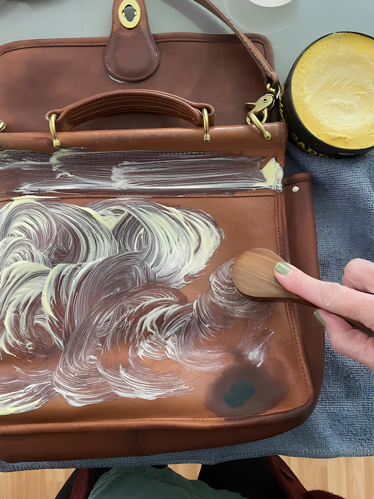
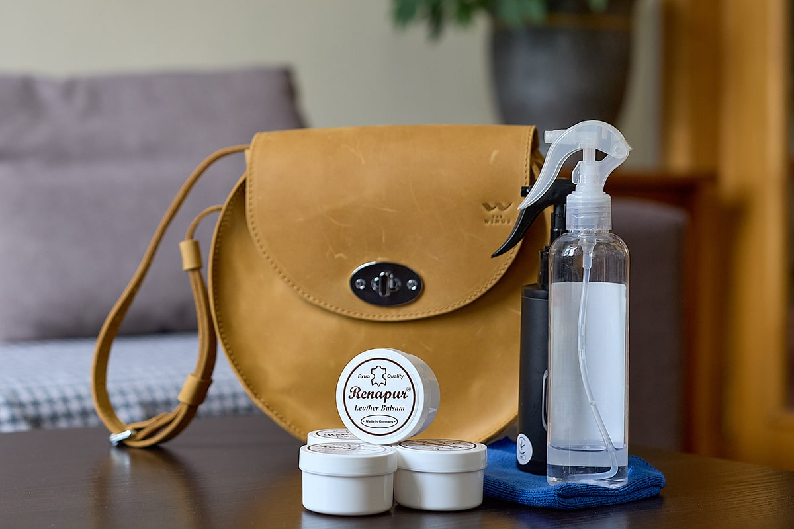
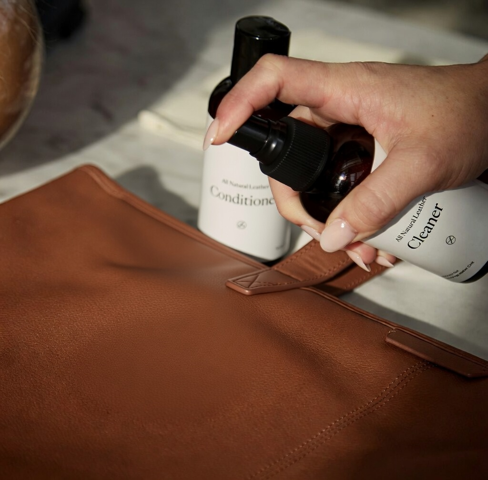
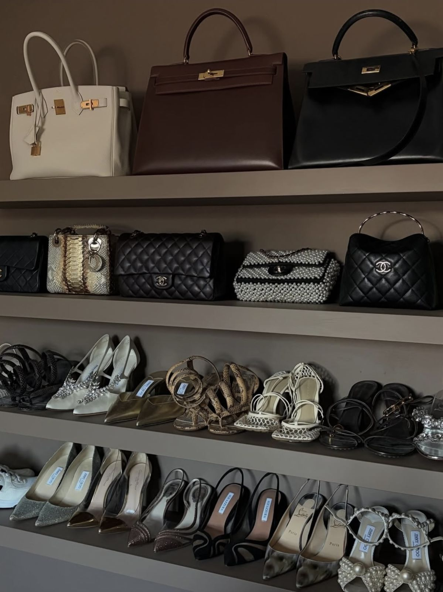

Кожа как живая материя
Кожаная сумка из винтажной коллекции — это предмет с историей. Со временем она не теряет ценность,
а меняется: становится мягче, глубже по оттенку, приобретает индивидуальную текстуру.
Эти изменения — естественная часть её «жизни».

Базовый уход
- Протирайте сумку мягкой сухой тканью после использования
- Избегайте длительного контакта с влагой
- Не сжимайте и не деформируйте изделие при хранении
- Используйте тканевые чехлы вместо пластика

Чистка
- Используйте только средства для натуральной кожи
- Тестируйте средство на незаметном участке
- Не применяйте спирт, ацетон и бытовую химию
Кожа требует мягкого подхода — без спешки и давления.

Увлажнение и защита
- Используйте кремы и кондиционеры для кожи
- Наносите тонким слоем, без избыточного количества
- Следите за реакцией материала
Цель — сохранить эластичность и предотвратить трещины.

Правильное хранение
- Избегайте прямого солнечного света
- Держите сумку в сухом помещении
- Наполняйте её бумагой для сохранения формы
- Храните вертикально, если возможно

Вещь, которая развивается вместе с вами
Винтажная сумка не должна выглядеть новой. Её ценность — в характере и следах времени.
Задача ухода — не стереть историю, а сохранить её в красивой форме.